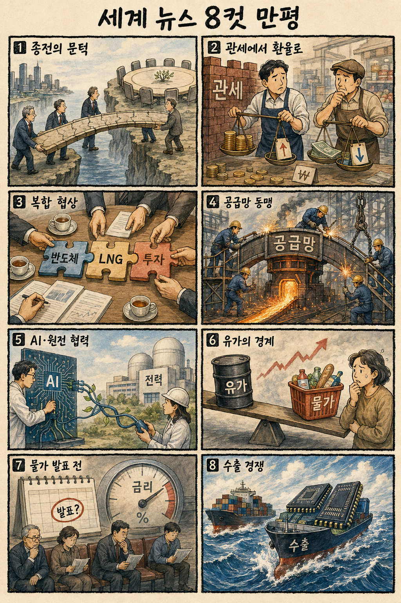
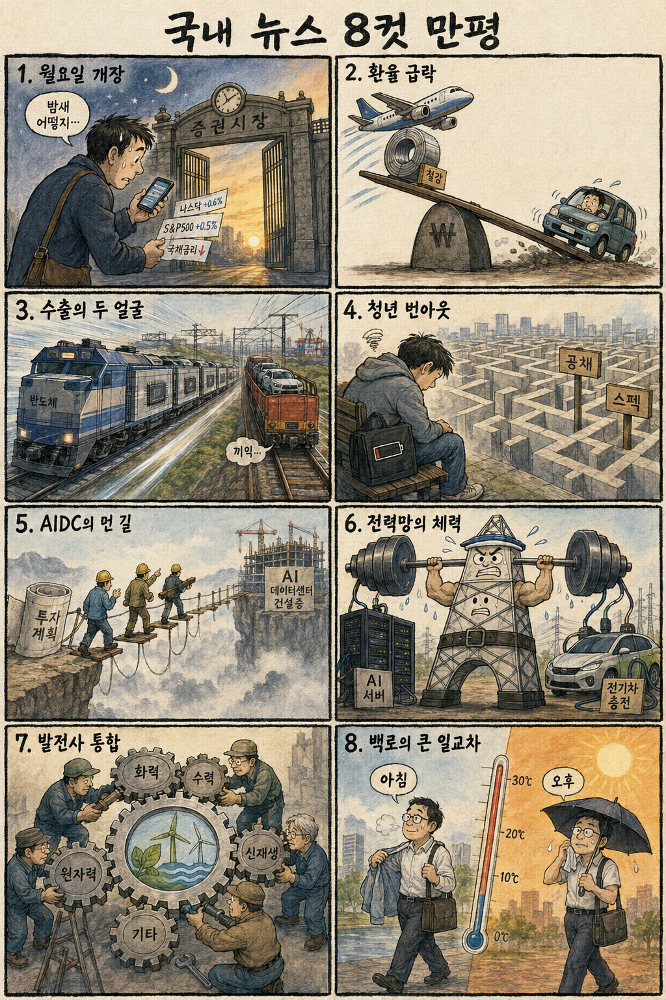

01
마벨 · 211.66→223.55달러 · +5.62%
내용요약 시가 대비 5.62% 상승해 반도체 종목 내 강한 상대 흐름을 보였습니다.
예상여파 국내 HBM·반도체 설계와 데이터센터 연결 종목의 심리를 지지할 수 있지만 월요일 갭 추격은 피해야 합니다.
MORNING_BRIEFING_20260907
작성 시각: 2026-09-07 06:39 KST · 직전 미국 정규장과 2026-09-07 KST 당일 공개 기사 기준
직전 미국 정규장인 9월 4일에는 강한 고용 신호가 금리 경계를 되살리며 다우 -0.51%, S&P 500 -0.38%, 나스닥 -0.29%로 하락했습니다. 다만 마벨 +5.62%, 마이크론 +4.66%, 인텔 +3.62% 등 일부 반도체주는 상대 강세였습니다. 월요일 한국 증시는 미국 지수 약세와 반도체 강세가 맞서는 가운데 원화 급등, 외국인 선물 수급과 시초가 안착이 방향을 가를 전망입니다.
| 지수 | 종가 | 등락률 | 한국 증시 시사점 |
|---|---|---|---|
| 다우존스 | 53,414.25 | -0.51% | 경기·금리 경계 |
| S&P 500 | 7,718.60 | -0.38% | 성장주 변동성 경계 |
| 나스닥 종합 | 26,506.99 | -0.29% | 성장주 변동성 경계 |
금리 경계가 지수 상단을 눌렀지만 반도체 내부는 차별화됐습니다.
마이크론·마벨 강세와 국내 직전 반등이 투자심리를 받칩니다.
원화 강세는 항공·철강과 자동차의 실적 기대를 다르게 움직입니다.
필수 데이터와 30건 보정 표본을 모두 충족한 후보가 없습니다.
9월 6일 보고서는 일요일 휴장과 검증 문턱 미충족으로 공식 추천을 내지 않았습니다. 게시 당시 판단은 그대로 유지되며 사후 종목을 추가하지 않습니다.
| 시장 | 종가 | 등락률 | 기준 |
|---|---|---|---|
| KOSPI | 6,687.21 | +1.64% | 9월 4일 · 시가 대비 +0.49% |
| KOSDAQ | 813.50 | +2.95% | 9월 4일 · 시가 대비 +1.39% |
| 다우존스 | 53,414.25 | -0.51% | 미국 9월 4일 정규장 |
| S&P 500 | 7,718.60 | -0.38% | 미국 9월 4일 정규장 |
| 나스닥 종합 | 26,506.99 | -0.29% | 미국 9월 4일 정규장 |
마벨 +5.62%, 마이크론 +4.66%, 인텔 +3.62%로 시가 대비 상승했습니다.
슈퍼마이크로 +3.75%, AMD +3.37%로 견조했습니다.
애플 -2.54%, 테슬라 -2.24%, 마이크로소프트 -2.02%였습니다.
원화 강세는 항공·철강 비용에 우호적이고 자동차 환산수익에는 부담입니다.
내용요약 시가 대비 5.62% 상승해 반도체 종목 내 강한 상대 흐름을 보였습니다.
예상여파 국내 HBM·반도체 설계와 데이터센터 연결 종목의 심리를 지지할 수 있지만 월요일 갭 추격은 피해야 합니다.
내용요약 시가 대비 4.66% 오르며 메모리 업종의 강세를 이끌었습니다.
예상여파 삼성전자·SK하이닉스 투자심리에 긍정적 연결고리지만 미국 고용발 금리 부담과 함께 판단해야 합니다.
내용요약 시가 대비 3.62% 상승해 지수 하락장에서 상대 강세를 기록했습니다.
예상여파 미국 반도체 생산·정책 기대가 이어질 경우 국내 장비·소재주는 수혜와 경쟁 압력을 동시에 받을 수 있습니다.
내용요약 시가 대비 3.75% 올라 AI 서버 수요 기대가 유지됐습니다.
예상여파 데이터센터 전력·냉각·기판 수요 심리를 지지하지만 개별 기업 변동성이 높아 추격 위험이 큽니다.
내용요약 시가 대비 4.77% 하락해 대형 성장주 가운데 뚜렷한 약세였습니다.
예상여파 금리 우려가 커질 때 장기 성장 기대에 의존하는 고평가 플랫폼주의 할인율 부담이 확대될 수 있습니다.
미국 지수 약세는 부담이지만 마이크론·마벨을 포함한 반도체 상대 강세와 9월 4일 KOSPI +1.64%, KOSDAQ +2.95% 반등이 완충재입니다. 원·달러 환율의 빠른 하락은 항공·철강과 자동차를 차별화할 수 있습니다. 개장 직후 외국인 선물, 원화 방향과 삼성전자·SK하이닉스의 시초가 안착을 확인하고 과도한 갭 상승은 추격하지 않습니다.
오늘은 추천 없음 — 현금 관망
전일까지의 외국인·기관 수급, 컨센서스 변화, 30건 이상 유사 조건 확률 보정과 예상 손익비 1.5 이상을 동시에 검증한 국내 종목이 없습니다. 장전 시가도 아직 형성되지 않아 점수와 확률을 임의로 만들지 않습니다.
관심 연결종목 대형 메모리, AI 데이터센터 전력·냉각, 원화 강세 수혜 업종은 관찰 대상일 뿐 매수 추천이 아닙니다. 장전 호재로 과도한 갭이 발생하면 추격매수 금지입니다.
외국인 선물과 대형 반도체의 시초가 안착, 원화 방향을 확인합니다.
강한 고용 뒤 CPI·PPI 예상과 금리 경로 변화가 성장주를 흔드는지 봅니다.
반도체·LNG·대미투자 조건이 기업 부담으로 연결되는지 점검합니다.
미 특사단의 키이우 회담이 3자 회담과 공격 완화로 이어지는지 봅니다.
핵심 요약: AI 산업의 병목은 칩 자체에서 전력·데이터센터·패키징·안전 규칙으로 넓어졌습니다. 국내 AIDC의 실행력, HBM 경쟁 심화와 24시간 무탄소 전력의 경제성을 구분해 볼 시점입니다.
내용요약 정부가 민간투자를 유도하고 있지만 국내 AI 데이터센터는 전력망, 입지, 인허가와 사업성 확보에서 풀 과제가 많다는 당일 보도입니다.
예상여파 AI 인프라 수요는 이어져도 계획 발표와 실제 착공·가동 사이의 간극이 커질 수 있어 전력계통과 자금조달을 함께 봐야 합니다.
내용요약 반도체 제조 경험이 부족한 기업의 AI 칩 개발 도전이 성공할 수 있는지를 실리콘밸리 관점에서 분석한 당일 기사입니다.
예상여파 설계 아이디어만큼 검증된 소프트웨어 생태계, 파운드리·패키징 접근성과 고객 채택이 상용화의 핵심 변수가 됩니다.
내용요약 삼성의 HBM 약진과 중국 CXMT의 진입으로 고대역폭메모리 시장 경쟁 구도가 흔들리고 있다는 당일 보도입니다.
예상여파 공급처 다변화는 가격과 점유율 경쟁을 키울 수 있어 성능 인증, 수율과 차세대 제품 양산 속도가 국내 업체의 프리미엄을 좌우합니다.
내용요약 구글도 주목한 24시간 무탄소 지열발전이 데이터센터 전력 대안으로 부상했다는 당일 보도입니다.
예상여파 간헐성 없는 청정전원 확보 경쟁이 지열·원전·저장장치 투자로 넓어지며 부지와 초기 개발비 검증이 중요해질 수 있습니다.
내용요약 미국과 중국이 AI 패권 경쟁 속에서도 9월 중순 안전 대화를 추진한다는 당일 보도입니다.
예상여파 모델 위험관리와 사고 대응의 최소 공통기준이 논의되면 기업의 평가·보안·거버넌스 비용과 국제 규칙 형성에 영향을 줄 수 있습니다.
핵심 요약: 우크라이나 종전 외교가 다시 움직이는 한편 미국의 통상 압박은 관세에서 환율과 복합 투자협상으로 넓어졌습니다. 프랑스와의 AI·원전 협력, 미국 현지 철강 생산은 공급망 재편의 실물 대응입니다.
내용요약 미국 특사단이 모스크바 방문에 이어 키이우에서 젤렌스키 대통령과 종전안을 논의한다는 당일 보도입니다.
예상여파 3자 회담으로 이어질지 여부가 유럽 안보와 에너지·곡물 운송의 위험 프리미엄을 좌우할 수 있습니다.
내용요약 미국이 캐나다 달러 약세를 문제 삼으며 관세 갈등이 환율 문제로 확대될 가능성을 제기한 당일 보도입니다.
예상여파 북미 교역비용과 통화 변동성이 커지면 자동차·원자재 공급망의 가격 결정과 기업 투자계획에 부담이 될 수 있습니다.
내용요약 한미 대미투자 협상에서 반도체, LNG와 이란 관련 의제가 함께 거론되며 복합 협상으로 전개된다는 당일 보도입니다.
예상여파 개별 산업의 투자조건이 에너지·외교 변수와 묶이면 협상 불확실성과 국내 기업의 자금·조달 부담이 커질 수 있습니다.
내용요약 한국 대통령의 프랑스 국빈 방문에서 AI와 원전 협력, 유럽 경제외교가 주요 의제로 다뤄질 전망이라는 당일 보도입니다.
예상여파 공동 연구와 수주 협력이 구체화되면 기술·에너지 기업의 유럽 진출 기반이 넓어질 수 있으나 실제 계약을 확인해야 합니다.
내용요약 현대제철이 미국 전기로 공사를 시작해 관세 장벽을 넘고 자동차 강판을 현지 대량 공급하려 한다는 당일 보도입니다.
예상여파 현지 생산은 통상 위험을 낮출 수 있지만 대규모 투자비, 가동률과 국내 생산·고용에 미치는 영향을 함께 점검해야 합니다.

핵심 요약: 원화 강세와 반도체 중심 수출 호조가 업종별 명암을 가르는 가운데 청년 고용의 번아웃과 전력산업 재편이 구조적 과제로 부각됐습니다. 백로 출근길에는 큰 일교차와 일부 지역 비를 챙겨야 합니다.
내용요약 원·달러 환율이 두 달 사이 크게 하락하면서 항공·철강은 원가 측면에서 유리하고 자동차는 환산 수익성 부담을 받을 수 있다는 당일 보도입니다.
예상여파 업종별 실적 민감도가 갈리는 만큼 환율 수준보다 하락 속도와 기업별 헤지, 수출가격 전략이 주가 차별화를 만들 수 있습니다.
내용요약 취업하지 못한 청년 두 명 중 한 명이 번아웃을 경험했고 진로 불안이 주된 원인이라는 조사 결과를 전한 당일 보도입니다.
예상여파 고용 회복이 지연되면 구직 단념과 소비 위축이 장기화될 수 있어 상담을 넘어 채용 연결과 직무 전환 지원의 실효성이 중요합니다.
내용요약 반도체 호조로 한국의 수출 순위 상승 가능성이 커졌지만 자동차 수출은 6년 만의 큰 폭 감소를 보였다는 당일 보도입니다.
예상여파 수출 총액의 개선과 품목별 체감경기 사이의 격차가 확대될 수 있어 반도체 의존도와 자동차 회복 여부를 함께 봐야 합니다.
내용요약 발전 5사의 중복 투자를 줄이고 재생에너지 경쟁력을 높이기 위한 통합 논의가 진행된다는 당일 보도입니다.
예상여파 조달·투자 효율이 좋아질 수 있지만 조직 재편 비용, 지역경제와 전력시장 경쟁에 미칠 영향도 세밀하게 설계해야 합니다.
내용요약 절기상 백로인 오늘 전국은 대체로 맑고 동해안과 제주 일부에 비가 내리며 일교차가 크다는 당일 예보입니다.
예상여파 출근길에는 얇은 겉옷을 준비하고 낮 더위와 강풍, 비가 예상되는 지역은 이동·시설물 안전에 유의해야 합니다.
